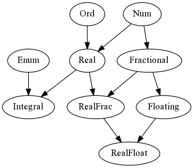

Programming in Haskell
CLI
The function getArgs from System.Environment in base is how you get
command line arguments.
import System.Environment main = do a <- getArgs print a return ()
The following example demonstrates how you might get some data from a user at the command line at run time rather than data about how the program was called.
main :: IO () main = do putStrLn "Do you want to continue? [y/n]" response <- getChar if response == 'n' then do putStrLn "\nmaybe next time :)" return () else if response /= 'y' then do putStrLn "\n\nI doughnut understand..." main else do putStrLn "\nwoohoo!" return ()
Debugging
- Load the relevant module:
λ> :load <module.hs> - Set a break point:
λ> :break <n> - Evaluate relevant expression
You can always use :help to get a listing, but here are some useful functions
| Command | Function |
|---|---|
:list |
See current line |
:step |
Step to next line |
:continue |
Run to next break |
:show breaks |
Show break points |
:delete <n> |
Delete break n |
Testing hspec
Add hspec to your dependencies and observe the following example
import Test.Hspec import Control.Exception (evaluate) main :: IO () main = hspec $ do describe "Prelude.head" $ do it "returns the first element of a list" $ do head [23 ..] `shouldBe` (23 :: Int) it "throws an exception if used with an empty list" $ do evaluate (head []) `shouldThrow` anyException
There is also integration with QuickCheck available.
Build tool stack
Installation, upgrading and uninstalling
There is a script from commercialhaskell which installs stack
curl -sSL https://get.haskellstack.org/ | sh
The executable is in /usr/local/bin by default. To upgrade stack there is
the stack upgrade command. To uninstall, remove the stack executable and
~/.stack and the .stack-work from any projects using stack.
stack installs to /home/<username>/.local/bin by default, so you should add
this to your path
export PATH=/home/<username>/.local/bin:$PATH
Starting a new project
stack new <project-name> <template-name>
cd my-project
stack setup
stack build
stack exec my-project-exe
Here <project-name> is the name of the directory that will be created to house
the project and <template-name> is the template to use; I like the simple
template because it uses cabal directly and is free from clutter. If there is
only library code and no executables, then the simple-library might be a
cleaner choice. Packages get added to package.yaml under dependencies: and
you start the REPL with stack ghci. Projects are configured by the .cabal
file, for simple and simple-library. stack can use hpack to convert a
package.yaml file to a .cabal file.
Commands
If you are ever unsure about some aspect of stack, appending --help is
usually pretty enlightening.
There are few ways to initialise a project.
stack new <package-name> stack new <package-name> <template-name> # Use a particular template stack new <package-name> --bare <template-name> # Without subdirectory
There are many commands within stack which are listed in the documentation.
Run the executable with
stack exec -- project-exe
Run the tests.
stack test
Build and open documentation in the browser.
stack haddock stack haddock --open
TODO Building with cabal
Building with nix
- use
cabal2nixto convert a project's cabal file into a nix derivation. As a result, every time the cabal file changes the nix derivation will need to be regenerated. - The
nix-buildcommand is used to build a package and thenix-shellcommand is used to enter a shell configured for development of the package. You'll one nix file for your overall package which imports the one that was generated bycabal2nix. - Despite being able to use nix to build your haskell project, Gabriel recommends sticking with cabal and just using nix to provision the development environment.
Profiling criterion
Criterion is the tools for profiling code. You build an application with
defaultMain which sets up the benchmarks with a CLI. The defaultMain expects
a [Benchmark], you group multiple benchmarks with bgroup, you create
Benchmark objects with bench.
If you want to use some pre-computed environment variables in a benchmark, you
need the env function to manage this. The following snippet demonstrates how
to do this, generating some random variables once, and then passing them into a
function.
module Main where import Control.Monad import Criterion.Main import qualified Data.Vector as V import Statistics.Sample import qualified System.Random.MWC as MWC sampleMeanBench :: String -> [Double] -> Benchmark sampleMeanBench name xs = bench name $ nf (mean . V.fromList) xs getRandomList :: Int -> IO [Double] getRandomList n = do gen <- MWC.create foo <- replicateM n (MWC.uniform gen) return foo -- Our benchmark harness. main = defaultMain [ bgroup "meanPure" [ sampleMeanBench "small" [1 .. 10] , sampleMeanBench "medium" [1 .. 100] , sampleMeanBench "large" [1 .. 1000] ] , bgroup "meanEnv" [ env (getRandomList 10) (\xs -> sampleMeanBench "small" xs) , env (getRandomList 100) (\xs -> sampleMeanBench "medium" xs) , env (getRandomList 1000) (\xs -> sampleMeanBench "large" xs) ] ]
This could be run with the following to get a HTML report as output.
$ stack exec -- criterion-demo --output report.html
Note that in the linear regression results reported, this considers the relationship between the number of evaluations and the time that required.
Documentation with haddock
Language
-- | The /n/th Fibonacci ... wait for it ... -- __number__ fib :: Int -- ^ the n -> Int
/italics/__bold__'hyperlink'@monospace@
Usage
Build and open documentation in the browser.
stack haddock stack haddock --open
Syntax
Basic
There is some basic syntax which is easy to forget.
-- |wild card f (_:xs) = xs -- |as-pattern f l@(x:xs) = x:l -- |guards f x | x < 0 = 0 | x >= 0 = 1 | otherwise = undefined -- |case expression f x = case x of pattern1 -> expression1 pattern2 -> expression2 _ -> undefined -- |where clause f x = g z where z = epxression -- |let expression f x = let z = expression in g z -- |list comprehension [sqrt x | x <- [1..9], x > 3]
You can use pattern matching to filter in a list comprehension as the following example demonstrates
data Foobar = Foo Int | Bar Char deriving (Show) x = [Foo 1, Bar 'a', Foo 2, Bar 'b'] y = [n | (Foo n) <- x]
In this snippet the variable y has the value [1,2].
Variable names
The Haskell 98 Report says
Underscore, "_", is treated as a lower-case letter, and can occur wherever a lower-case letter can. However, "_" all by itself is a reserved identifier, used as wild card in patterns. Compilers that offer warnings for unused identifiers are encouraged to suppress such warnings for identifiers beginning with underscore. This allows programmers to use "_foo" for a parameter that they expect to be unused.
Typeclasses
class Eq a where (==) :: a -> a -> Bool (/=) :: a -> a -> Bool x == y = not (x /= y) x /= y = not (x == y) data Foobar = Foo | Bar instance Eq Foobar where Foo == Foo = True Bar == Bar = True _ == _ = False
There are cases where a class will have multiple type parameters, e.g. a, b,
and c, but one of them may be determined by the others, c is determined by
a and b. One way to resolve this is by adding type annotations, but this is
unpleasant. Functional dependencies are a way to tell the compiler that c is
determined by a and b. The following snippet gives an example of the syntax
(a vertical bar, |) used to acheive this
class Foo a b c | a b -> c where ...
Monad transformers with mtl
ReaderT
To avoid explicitly passing environment data around, one can use the ReaderT
monad transformer to add read-only environment. The following example shows the
reader monad transformer in action.
import Control.Monad.Reader (ReaderT, ask, liftIO, runReaderT) data Env = Env { envInput :: FilePath } step1 :: ReaderT Env IO Int step1 = do liftIO $ putStrLn "Greetings from Step 1." return 0 step2 :: Int -> ReaderT Env IO () step2 n = do liftIO $ putStrLn (show n) fp <- envInput <$> ask line <- liftIO $ readFile fp liftIO $ putStr ("Autobots, " ++ line) main :: IO () main = do runReaderT (step1 >>= step2) (Env "autobots.txt")
The main function sets up an environment which is passes to Step 1 which puts
a value of 0 in the monad. Then in the second function the value is printed and
the contents of the file referenced in the environment is printed out, i.e., the
file autobots.txt which just contains a single line with "roll out". Running
this in the REPL gives the following output.
λ> main Greetings from Step 1. 0 Autobots, roll out
ReaderT on ExceptT
The example above using the reader monad transformer can be extended to improve the error handling in the case where the file path in the environment does not exist.
import Control.Monad.Except (ExceptT, runExceptT, throwError) import Control.Monad.Reader (ReaderT, asks, liftIO, runReaderT) import System.Directory (doesFileExist) newtype Env = Env { envInput :: FilePath } type Robot a = ReaderT Env (ExceptT String IO) a runRobot :: Robot a -> Env -> IO (Either String a) runRobot robot env = runExceptT (runReaderT robot env) step1 :: Robot Int step1 = do liftIO $ putStrLn "Greetings from Step 1." return 0 step2 :: Int -> Robot () step2 n = do liftIO $ print n fp <- asks envInput exists <- liftIO $ doesFileExist fp if exists then do line <- liftIO $ readFile fp liftIO $ putStr ("Autobots, " ++ line) else throwError "Could not find file in step 2"
The main function has been remove but there is not much added code here.
Running the runRobot function in the REPL we get the following results which
demonstrate how the failure path evaluates.
λ> runRobot (step1 >>= step2) (Env "autobots.txt") Greetings from Step 1. 0 Autobots, roll out Right () λ> runRobot (step1 >>= step2) (Env "autobats.txt") Greetings from Step 1. 0 Left "Could not find file in step 2"
Data structures
Numbers

Int and Word
The package Data.Int provides signed integers and Data.Word provides
unsigned integers. The latter may be useful to encode that the number has to be
positive at the type level.
Semigroup
A semigroup is a set with an associative binary operation. In base this type
class, Data.Semigroup, requires a function <>, and instances of this function must be
associative.
Monoid
A monoid is a semigroup which has an identity element. In base this type
class, Data.Monoid, requires the function <>, as in semigroup, and mempty
for the identity element. The mempty must be both a left and right identity.
Data.List.NonEmpty(inbase) for non-empty lists to avoid run time errors due to bad calls toheadortail.containershas several efficient data structures that can be used as an alternative to lists.Data.Mapfor look-up tablesData.Sequenceif you finite lists you can access from both endsData.Setfor sets of elements inEqandOrd
vectorhas vectors.
Foldable
A data structure that reduced to a single summary value: foldr :: (a -> b -> b)
-> b -> t a -> b. For example, you might add up all the values on a tree where
each node has a value. When the data form a monoid foldMap can be implemented
instead which just uses the monoid's addition.
Traversable
Like a more powerful functor: traverse :: Applicative f => (a -> f b) -> t a ->
f (t b)
ST monad
A classic example of the ST monad is
import Control.Monad.ST import Data.STRef import Data.Foldable sumST :: Num a => [a] -> a sumST xs = runST $ do n <- newSTRef 0 for_ xs $ \x -> modifySTRef n (+x) readSTRef n
in strange situations sometimes a while loop would be nice as well.
The following function can help with this
whileM_ :: (Monad m) => m Bool -> m a -> m () whileM_ p f = go where go = do x <- p if x then f >> go else return ()
We can re-write the sumST function using this as follows.
sumST' :: Num a => [a] -> a sumST' xs = runST $ do n <- newSTRef 0 p <- newSTRef (not $ null xs) i <- newSTRef 0 m <- pure $ length xs whileM_ (readSTRef p) $ do ix <- readSTRef i modifySTRef n (+ (xs !! ix)) modifySTRef i (+ 1) modifySTRef p (\_ -> (ix + 1 < m)) readSTRef n
Linting hindent
hindent is a pretty printer which can be used to lint Haskell code.
Install it with stack install hindent and pay attention to where it installs because you need that on your path.
There is an Emacs minor mode, hindent-mode, which exposes the functionality of this program: hindent-reformat-*.
I have the following shortcuts:
SPC o h h rowner haskell hindent regionSPC o h h bowner haskell hindent buffer
JSON with Aeson
aeson is the package for working with JSON. The important functions provided
are encode and decode and the typeclasses ToJson and FromJson which
ensure a type can be encoded and decoded. They can be derived automatically
along with Generic, although this requires the DeriveGeneric and
DeriveAnyClass extensions to be include. The OverloadedStrings is also very
useful to include. In addition to loading import Data.Aeson as JSON you need
to import GHC.Generics. This stuff tends to work with lazy bytestrings, so
there may be a little bit of messing around to get that working but it is not
too bad.
Note that when decoding an object from a JSON file, the order of the key-value pairs in the JSON does not matter, nor does the existance of additional fields provided the important ones can be parsed correctly.
There is a useful cheatsheet on parsing JSON from William Yao which may be worth looking at.
Haskell layer in Spacemacs
To enable the Haskell layer add the following to dotspacemacs-configuration-layers.
(haskell :variables haskell-enable-hindent-style "johan-tibell" haskell-process-type 'stack-ghci)
If you want to make use of hindent, you'll need to make sure that the executable is on the path Emacs uses: exec-path or eshell-path-env.
GHC extensions
OverloadedStrings
Allows you to use string literals to mean other string-ey type things.
For instance, this would be useful when working with Text.
RecordWildcards
Neat syntax for pattern matching a record based on its field names.
UnicodeSyntax
This allows you to make use of Unicode characters in your code which is particularly nice if you are going a verbatim translation of some mathematics. Emacs provides a nice way to make it easy to input Unicode but to make it even easier, I've added the following bindings.
;; Set the input method to TeX so typing TeX defaults to the Unicode. ;; Use C-\ to escape this input method. ;; MNEMONIC: owner-haskell-unicode (spacemacs/set-leader-keys "ohu" 'set-input-method)
OverloadedLists
This desugars list syntax to make it easier to use list syntax to construct things.
{-# LANGUAGE OverloadedLists #-} foo = [(1,2),(2,3)] :: Map Int Int
This will only work with the OverloadedLists extension.
GHC extensions: DeriveX
DeriveFunctorDeriveFoldableDeriveTraversableGeneralizedNewtypeDerivingto make better use ofnewtype.
Packages I like
ad: combinators for automatic differentiation
aeson: a JSON parsing and encoding library
cassava: parsing and encoding RFC 4180 compliant CSV data
One example of using cassava is to make the Chain type from mcmc-types an
instance of ToRecord which makes it easier to write MCMC samples to a CSV. The
following snippet demonstrates how you might do this with an orphan-instance.
import Data.Csv import Data.Maybe (fromMaybe) import qualified Data.Vector as V instance (ToRecord a, ToRecord b) => ToRecord (Chain a b) where toRecord Chain {..} = V.concat [ (record [toField chainScore]) , (toRecord chainPosition) , fromMaybe V.empty (toRecord <$> chainTunables) ]
math-functions: various utilities for numerical computing
moo: provides building blocks to build genetic algorithms
monad-par which makes use of combinators in monad-par-extras
Without knowing anything about how this works internally, the following functions should be sufficient for running a map type computation in parallel.
import Control.Monad.Par (runPar) import Control.Monad.Par.Combinator (parMap) data Par a runPar :: Par a -> a parMap :: Traversable t => (a -> b) -> t a -> p (t b)
statistics: common functions and types useful in statistics
Type theory
See my type theory notes
Hackage
Notes about uploading a package to hackage
- Once a package is uploaded, it is there forever so make sure it is correct, that is why there is the package candidate system.
- The utility
cabal gen-boundsmakes it easy to generate suitable bounds on dependency versions. To keep the version bounds DRY you only need to specify them on their first occurrence in the cabal file. - There is a cabal
sdistutility to zip up a package prior to submission. - When a package is updated the package versioning policy should be used to
update the package version. There is a useful decision tree to help you apply
this policy. A version must be of the form
A.B.Cwith an optional suffix of.D. - The command
stack sdistwill check the package for common mistakes and produce a tarball ready for uploading. When a package is uploaded, it may take a while for the documentation to be build and uploaded. - To use the uploaded package before it has made it onto stackage you can copy
the link for the tarball into
extra-depsin the stack YAML file.
Haskell for science
Optimisation
Use moo for a rough estimate.
Root finding
Use statistics for finding roots if you know a bounding interval, with or without derivatives, both Ridders and Newton have good convergence.
Differential equations
Consider
\[ \frac{dx}{dt} = \alpha x(t), \quad x(0) = x_0 \]
This example needs hmatrix and hmatrix-gsl.
import Numeric.GSL.ODE import Numeric.LinearAlgebra import Numeric.LinearAlgebra.Data alpha = 0.1 xdash _ [x] = [x * alpha] x0 = 1.0 ts = linspace 100 (0,3) numericSol = odeSolve xdash [x0] ts exactSol = asColumn $ x0' * exp (alpha' * ts) where x0' = scalar x0 alpha' = scalar alpha main :: IO () main = if maxElement (numericSol - exactSol) < 1e-10 then putStrLn "They are equal!" else putStrLn "Huge error :("
Random number simulation
import System.Random.MWC foobar :: IO (Double,Double) foobar = do gen <- create x1 <- uniform gen x2 <- uniform gen return (x1,x2)
This returns a pair of different numbers because it is working in an instance of PrimMonad and managing the state between uses of gen.
Multiple calls to this function always return the same values because the create function starts with a hardcoded seed in the library.